To empower aspiring hospitality professionals with industry-relevant skills and hands-on experience, preparing them for successful careers in premium hotels and international hospitality establishments.
Hospitality & cruise career training · Surat, India
Make room for
what’s next.
Practical hospitality training for ambitious people ready to build careers in hotels, resorts and cruise services.
Beyond boundaries.
Build your career.
Build your career.
Beyond boundaries
Training for
global careers.
Explore IAMC’s program highlights, practical training areas and cruise career opportunities.
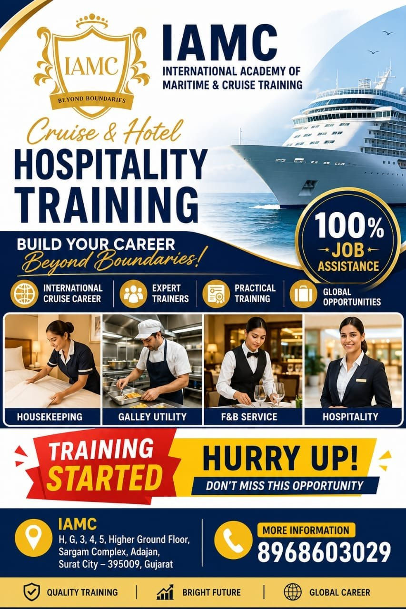
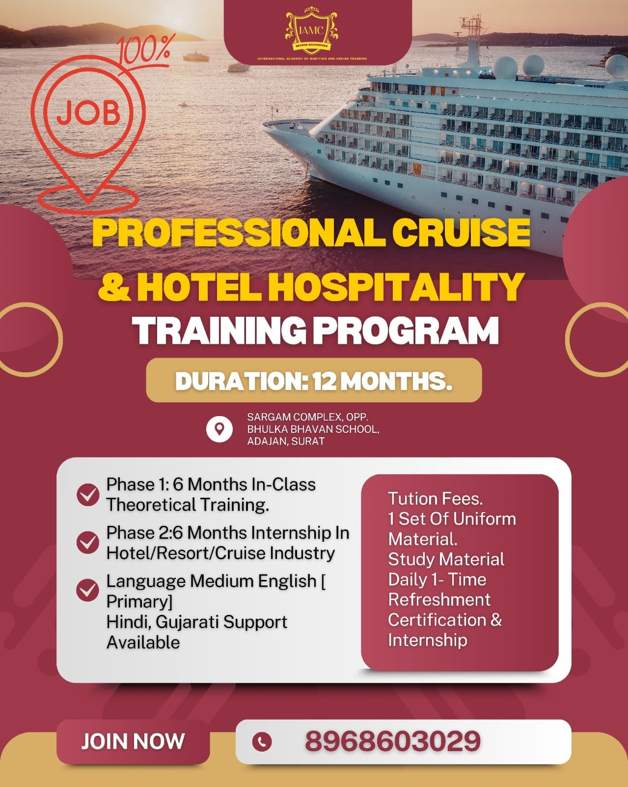
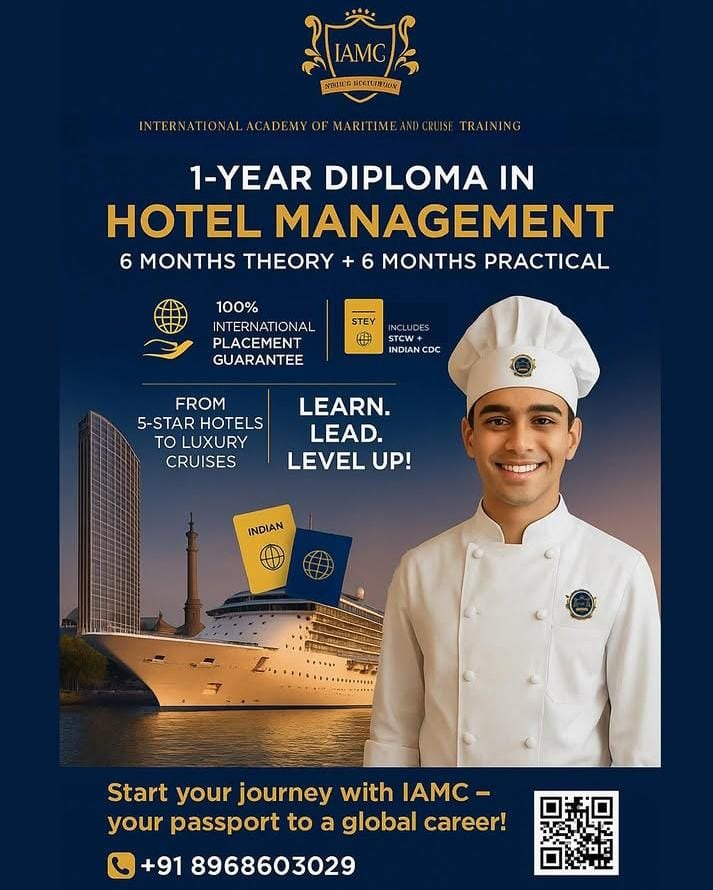
The IAMC approach
Learn the craft.
Live the experience.
Great hospitality is built on skill, confidence and care. IAMC helps aspiring professionals prepare for the real rhythm of hotel operations and guest service.
Our programs bring classroom foundations together with practical learning, guided by experienced hospitality professionals.
How we teach01 yearHospitality diploma
06 monthsIndustrial training
4–5 starHotel career focus
04 pathsCareer settings
What guides us
Skills with
a purpose.
Establishing ourselves as India’s premier hospitality training institute by delivering practical, industry-aligned education that bridges classroom learning and real-world hotel operations.
Why IAMC
A strong start
for your career.
Industry-facing learning and practical support to help you prepare for hospitality work.
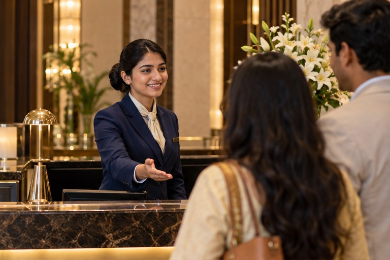
Real hotel experience
Training integrates with operations in 4-star and 5-star hotel properties.
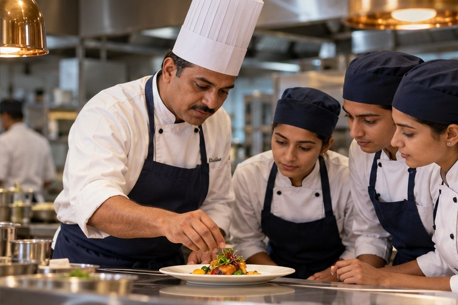
Expert trainers
Learn from hospitality professionals with experience in premium establishments.
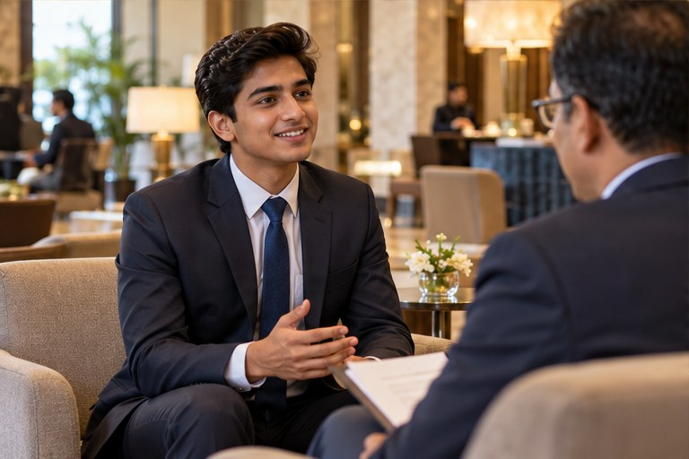
Job placement support
Get CV preparation and dedicated career assistance throughout your journey.
Industry-focused diploma
The one-year diploma is designed around hospitality industry standards.
More than a classroom
Confidence comes
from doing.
Build practical ability across the details that shape a guest’s stay—from first welcome to final farewell.
Talk about your goals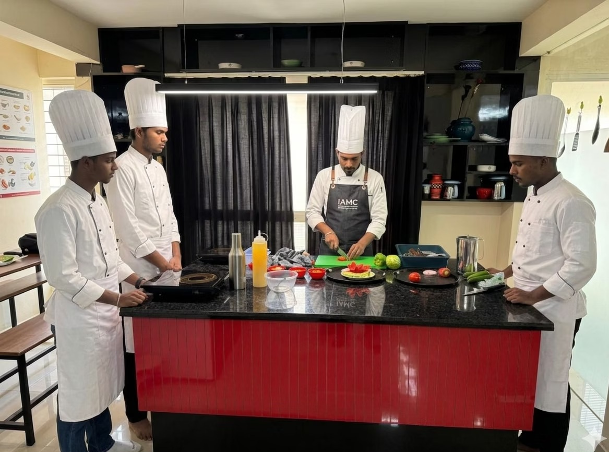
Learn the essentials
Explore hotel operations, service standards, guest relations and management principles.
Practice with purpose
Develop skills in front desk operations and guest relations, food and beverage service excellence, housekeeping standards and protocols, galley utility, and customer relationship management.
Learn safe service
Understand hotel safety and security procedures as part of operational readiness.
Prepare for the next step
Get support with career direction, CV preparation and interview readiness.
The one-year pathway
Learn in class.
Train in industry.
Build hospitality foundations through six months of theory, followed by six months of practical internship experience.
In-class theory
Build your foundation in hotel and cruise hospitality. English is the primary language, with Hindi and Gujarati support available.
Industry internship
Gain practical experience through an internship in the hotel, resort or cruise industry.
Materials & credentials
Program package details include tuition, one uniform set, study material, one daily refreshment, certification and internship. STCW and Indian CDC are also listed; contact IAMC for the current credential and package details.
Find your direction
Training for a world
of possibilities.
Start with a strong foundation or focus on a skill that matches your ambitions.
01 / DIPLOMA
Hospitality
Diploma
A one-year program covering hospitality operations, guest services and hotel management principles.
Contact For More Details02 / INDUSTRIAL
Hotel Industrial
Training
Six months of theory and practical training, including a structured internship in operational hotel departments.
Contact For More Details03 / SHORT COURSES
Focused
Learning
Choose from cooking courses, culinary arts and a cruise ship training program designed around your goals.
Contact For More DetailsPersonal coaching
Small steps.
New horizons.
Choose flexible coaching and course durations to fit your schedule and career goals, with practical learning in hospitality and culinary arts.
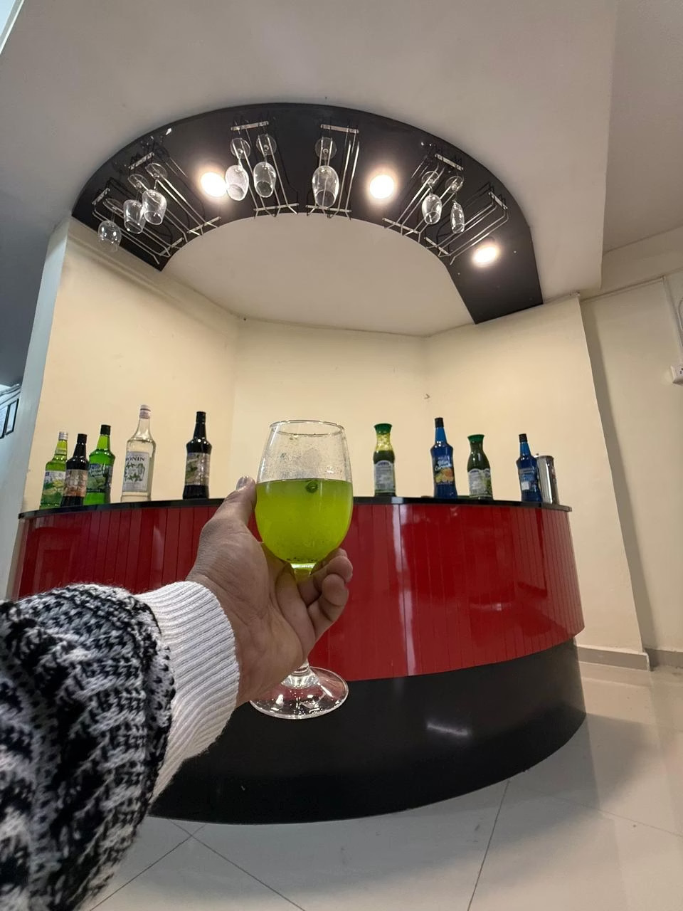
5 daysCooking courseAn intensive introduction to hospitality fundamentals.
15 daysCooking coursePractical sessions for broader cooking skills.
1 monthCruise ship trainingTraining across hospitality operations for cruise work.
3 monthsCulinary artsExtended practical learning in culinary arts.
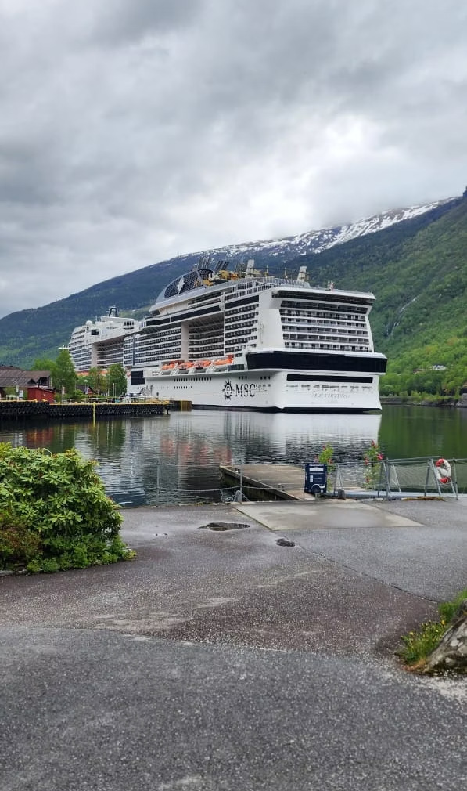
A career with a wider viewTake your skills further
Your next workplace
could be the world.
Explore hospitality roles across premium hotels, restaurants, resorts and cruise lines. IAMC offers career guidance and cruise application preparation to help you take the next step.
- Personalized guidance to choose a cruise role
- Professional CV tailored to cruise standards
- Mock interviews and cruise interview preparation
- Guidance on passport, medical tests, CDC and documents
- Placement assistance and recruitment partner connections
- Explore hospitality roles that combine work with international travel
Career opportunities
A world of
ways forward.
IAMC prepares learners to explore a range of hospitality settings and roles.
4-star & 5-star hotels
Front office, guest services, concierge and management positions in premium establishments.
Restaurants & resorts
Food service, banquet operations and hospitality management roles.
Cruise lines
International cruise ship roles with opportunities to travel while building experience.
International hospitality
Placement assistance for hospitality positions and career opportunities worldwide.
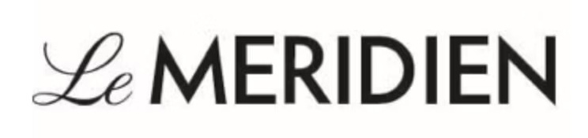
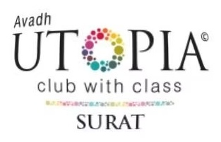
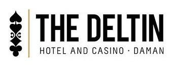
Learn, train, step forward
Experience that
builds readiness.
Complete a six-month internship in operational hotel departments. IAMC’s career pathway also lists a minimum of 1.5 years’ experience in 4-star and 5-star establishments. Contact IAMC for details about how this experience pathway is structured.
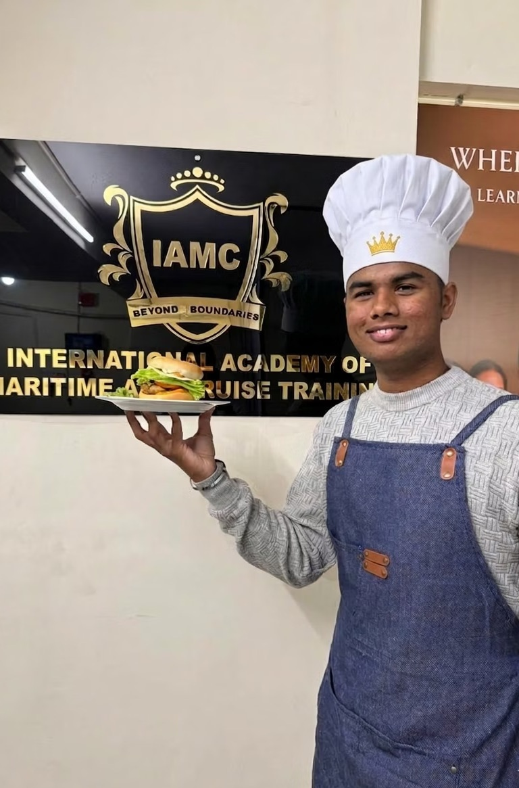
6 monthsstructured internship
in hotel operations
in hotel operations
Plan your learning
Clear starting
points.
Fees shown: ₹1,75,000 for the one-year diploma, ₹25,000 admission fee, and ₹25,000 monthly for six months. Ask IAMC whether the admission fee is included in the diploma total and confirm current fees.
Begin a conversation
Ready to find
your direction?
Connect with IAMC to ask about admissions, course details, fees and upcoming batches.
Maritime & Cruise Training
Office No. H.G. 3, Sargam Complex,
4 Higher Ground, 231, opposite Bhulka Bhavan School,
Saint Park Society, Adajan Gam, Adajan,
Surat, Gujarat 395009, India